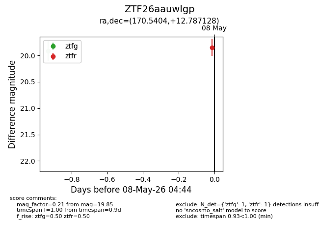
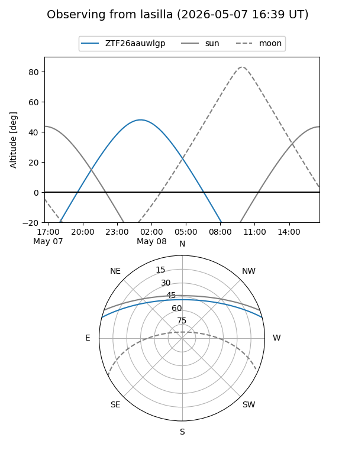
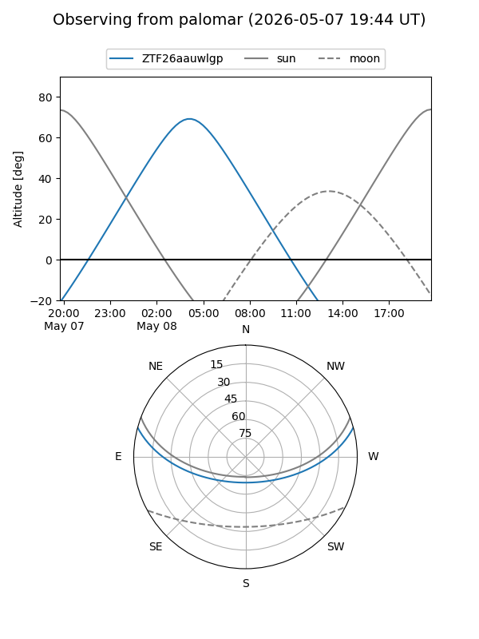
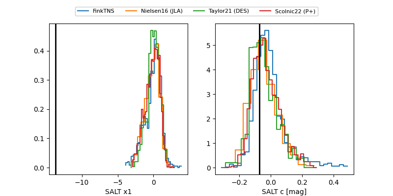

ZTF26aauwlgp
Target ZTF26aauwlgp at 2026-05-08 04:46
Aliases and brokers:
FINK: link
Lasair: link
ALeRCE: link
alt names
ZTF26aauwlgp (ztf,fink_ztf)
Coordinates:
equatorial (ra, dec) = 170.5404,+12.78713
equatorial (HMS+DMS) = 11:22:09.71,+12:47:13.66
galactic (l, b) = (242.9971,+64.66443)
Flags:
Photometry:
last ztfg=19.92, ztfr=19.85
1 ztfg, 1 ztfr detections
Lightcurve

Visibility


Additional plots
